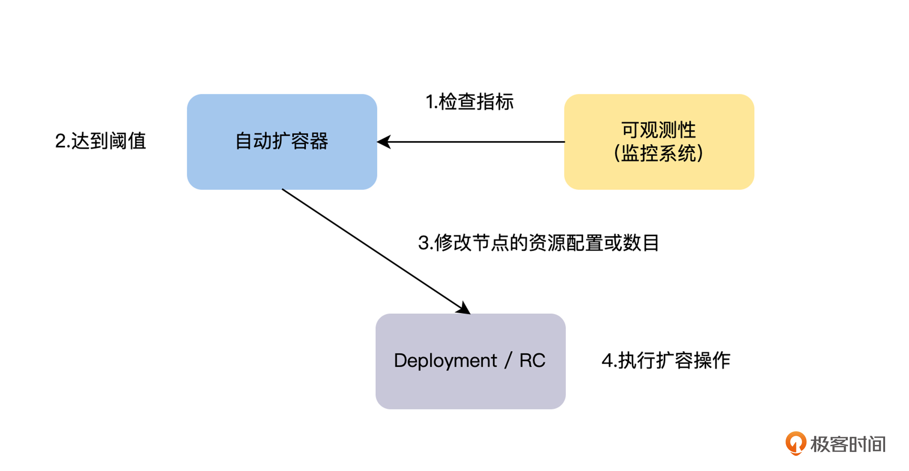
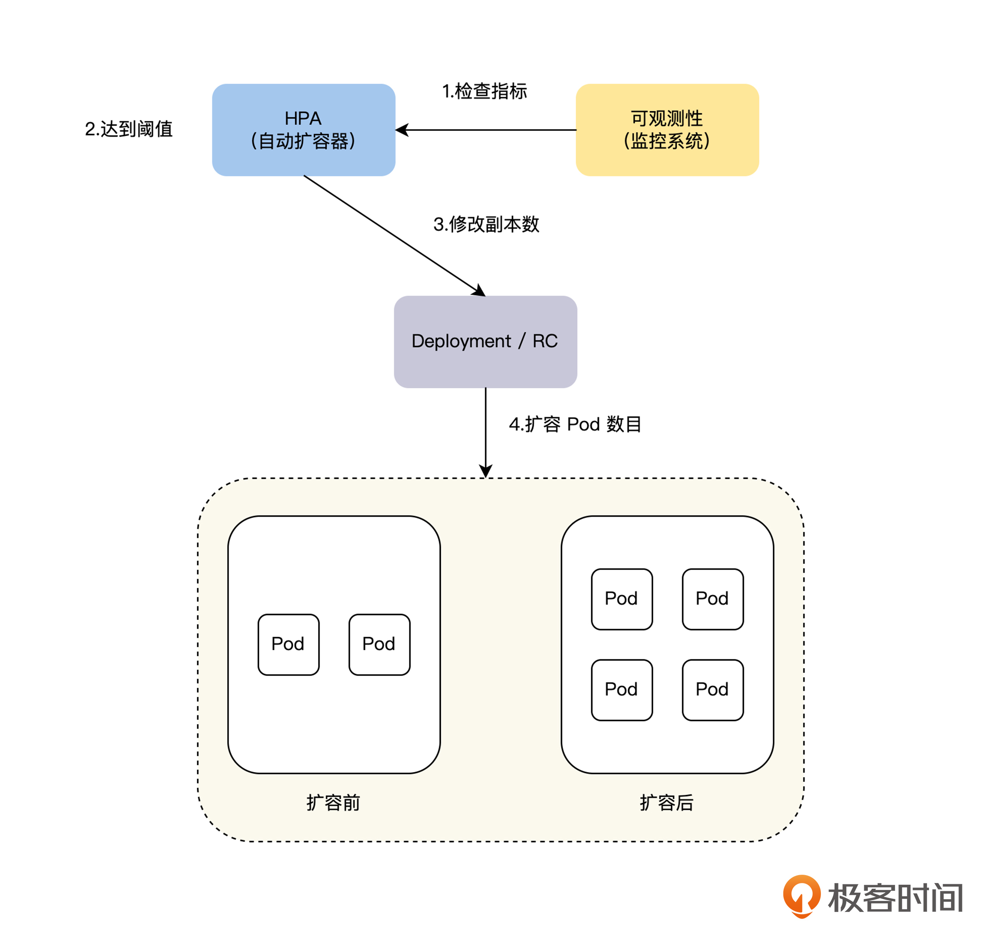
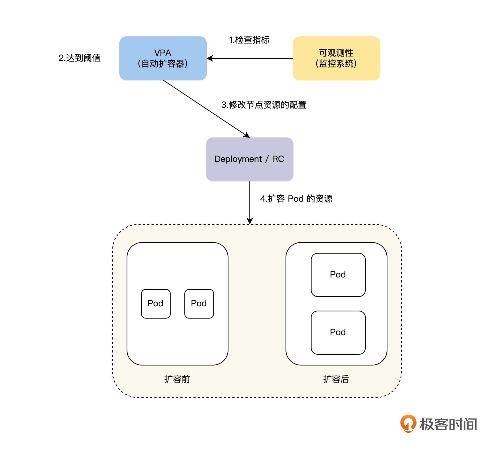

- 00 开篇词 掌握好学习路径，分布式系统原来如此简单.md.html
- 01 导读：以前因后果为脉络，串起网状知识体系.md.html
- 02 新的挑战：分布式系统是银弹吗？我看未必！.md.html
- 03 CAP 理论：分布式场景下我们真的只能三选二吗？.md.html
- 04 注册发现： AP 系统和 CP 系统哪个更合适？.md.html
- 05 负载均衡：从状态的角度重新思考负载均衡.md.html
- 06 配置中心：如何确保配置的强一致性呢？.md.html
- 07 分布式锁：所有的分布式锁都是错误的？.md.html
- 08 重试幂等：让程序 Exactly-once 很难吗？.md.html
- 09 雪崩（一）：熔断，让故障自适应地恢复.md.html
- 10 雪崩（二）：限流，抛弃超过设计容量的请求.md.html
- 11 雪崩（三）：降级，无奈的丢车保帅之举.md.html
- 12 雪崩（四）：扩容，没有用钱解决不了的问题.md.html
- 13 可观测性（一）：如何监控一个复杂的分布式系统？.md.html
- 14 可观测性（二）：如何设计一个高效的告警系统？.md.html
- 15 故障（一）：预案管理竟然能让被动故障自动恢复？.md.html
- 16 故障（二）：变更管理，解决主动故障的高效思维方式.md.html
- 17 分片（一）：如何选择最适合的水平分片方式？.md.html
- 18 分片（二）：垂直分片和混合分片的 trade-off.md.html
- 19 复制（一）：主从复制从副本的数据可以读吗？.md.html
- 20 复制（二）：多主复制的多主副本同时修改了怎么办？.md.html
- 21 复制（三）：最早的数据复制方式竟然是无主复制？.md.html
- 22 事务（一）：一致性，事务的集大成者.md.html
- 23 事务（二）：原子性，对应用层提供的完美抽象.md.html
- 24 事务（三）：隔离性，正确与性能之间权衡的艺术.md.html
- 25 事务（四）：持久性，吃一碗粉就付一碗粉的钱.md.html
- 26 一致性与共识（一）：数据一致性都有哪些级别？.md.html
- 27 一致性与共识（二）：它们是鸡生蛋还是蛋生鸡？.md.html
- 28 一致性与共识（三）：共识与事务之间道不明的关系.md.html
- 29 分布式计算技术的发展史：从单进程服务到 Service Mesh.md.html
- 30 分布式存储技术的发展史：从 ACID 到 NewSQL.md.html
- 春节加餐 技术债如房贷，是否借贷怎样取舍？.md.html
- 春节加餐 深入聊一聊计算机系统的时间.md.html
- 春节加餐 系统性思维，高效学习和工作的利器.md.html
- 结束语 在分布式技术的大潮流中自由冲浪吧！.md.html
- 捐赠
12 雪崩（四）：扩容，没有用钱解决不了的问题
你好，我是陈现麟。
在降级的学习中，我们掌握了降级机制的应用场景，手动降级和自动降级的实现原理，以及降级机制值得注意的一些关键问题，这样我们就可以引入分级降级策略，来快速降低系统的负载，确保核心服务的可用性了。现在我们已经学习完了分布式系统稳定性的三板斧：熔断、限流和降级，以后对维护后端系统的稳定性就更有信心了。
虽然熔断、限流和降级，很大程度上保障了系统的稳定性，但是从结果来看，它们都是通过放弃一定的用户体验和可用性，来确保系统在过载情况下依然正常运行的，这是一种通过有损节流，来降级系统负载的思路，那么有没有一种无损的方式，可以保障系统在过载下依然正常运行呢？
其实，这个问题就引出了一个典型的扩容场景，在这节课中，我们将一起讨论保障分布式系统稳定性的最后一个方法——扩容，了解需要扩容的原因，讨论如何实现扩容，最后再一起分析扩容机制与云原生的关系。这里要说明一点，因为缩容是扩容的逆向操作，所涉及的思路，原理和扩容一致，所以在课程中就不分开说明了。
为什么需要扩容
在“雪崩”系列的前三课中，我们分别介绍了解决分布式系统稳定性的三板斧：熔断、限流和降级，它们从系统底线的保障、核心服务的保障和非核心服务的牺牲这三个角度，全方位地保障着分布式系统的正常运行。但是，正如课程开始提到的，这些方法本质上都是对系统进行降级，通过有损的方式来保障系统不会雪崩。
究其根本原因，熔断、限流和降级都是一种静态思维模式，当系统过载了，就通过各种方式来放弃一部分请求，降低系统负载，从而让系统恢复正常。我们在降级这节课中也提到过，从更广义上来讲，熔断和限流都是降级的一种特殊情况，都在做丢车保帅的事情。
而扩容则是一种动态的思维模式，当系统过载了，就增加资源让系统重新恢复正常，而不是对系统进行降级处理，所以扩容是一种无损的系统过载恢复手段。
但是，扩容也会带来问题，我们需要用更多的资源来应对系统过载，也就是需要花费更多的钱。这是一个投入产出比（ ROI ）的问题，是通过有损降级恢复系统，导致用户的体验和可用性，以及用户口碑、品牌等方面的损失，与扩容资源投入的价值之间的比较。不过对于我们来说，这也不是一个二选一的问题，正常的情况下两个方式都会需要，我们在有损降级和扩容之间，找到适合自己的平衡点即可。
一般对于一个公司来说，在不同的阶段，对于平衡点的选择会有不同的倾向，早期公司会更倾向于使用有损降级的方向，而成熟公司会更倾向于使用扩容的方向，这其实就是由系统稳定性保障的 ROI 来决定的。
那么，在拥有扩容机制之后，我们的雪崩处理策略也会发生变化，不论是像运营活动等计划内的流量突增场景，还是计划外的系统过载问题，我们都会先投入一定的资源对系统进行扩容，来应对系统的过载问题。如果扩容后，系统依然处于过载状态，那么就通过熔断、限流和降级等有损机制，对系统的稳定性进行兜底。而对于扩容应该投入多少资源，每个公司根据自己的情况来设置这个平衡点。
如何实现扩容
通过上面的讨论，我们知道除了熔断、限流和降级之类的有损策略外，还可以通过扩容这样的无损策略，将系统恢复到正常的情况，这对于用户规模大、品牌价值强的公司来说，无疑多了一个非常好的选择。
在对系统进行扩容的时候，首先我们需要评估出需要扩容的服务，以及需要扩容到什么样的容量，然后才能进行扩容。一般来说，对于运营活动之类的计划内的扩容，我们通过历史数据和经验来评估，而对于线上计划外的系统过载触发的扩容，我们就需要通过监控，来捕捉系统的过载服务和程度，然后才能进行扩容操作。一般来说，动态扩容的流程如下图。

那么接下来，我们先介绍如何通过自适应的方式，来判断服务是否出现过载问题，然后从自动扩容的角度讨论如何实现扩容机制。
过载判断
过载判断是一件复杂的事情，如果我们打算通过基准测量，来确定服务过载指标，这将是一件无法持续的事情。因为服务会持续迭代，服务运行的硬件随时都有可能发生变化，这就会导致一种情况，即付出了巨大的工作量，但测量出的过载指标可能还是无法匹配线上运行，那么最终就会让过载判断出现错误，人为引入了故障。所以，我们需要寻找可以自适应的过载判断标准。
对于这个问题，有一个可行的方案，是我们在熔断这节课中介绍的，我们可以依据请求在队列中的平均等待时间来计算服务的负载。比如，一个服务在 1 分钟之内的平均等待时间超过 3 秒，我们就认为该服务进入过载状态。这里的“ 1 分钟之内的平均等待时间超过 3 秒”是一个自适应的指标，不论服务是否进行优化和迭代，以及服务运行在什么样的硬件上，我们通过这个指标来进行判断都是成立的。
但是，这个方式需要入侵到每一个服务的实现逻辑中，所有的服务都需要在实现时，暴露出接口请求的排队时间。如果有一个服务没有暴露，我们将无法捕捉到这个服务的过载状态，从而导致故障的发生。并且有些服务的实现，不会对接口请求进行排队，在这样的情况下，我们也就无法通过排队时间，来判断服务的过载情况了。
所以在熔断场景下，我们对服务的过载判断进行了简化，直接对服务接口请求的结果来进行判断，如果请求发生了过载原因导致的错误，并且超过一定的阈值时，我们就可以认为该接口是过载的。
经过上面的讨论，可能你会觉得对服务的过载判断还是比较难的，其实从本质上来说，过载判断是非常简单的，我们只需要知道服务的满载指标，接近或者超过这个指标就是过载。但是依据这个思路确定服务过载指标时，会有 2 个问题。
- 初始满载指标测量的工作量大：服务非常多，并且还会快速增长，需要持续测量每一个服务的满载指标。
- 服务的满载指标是会变的：服务持续迭代，并且会运行在不相同的硬件上，导致满载指标是不稳定的。
而上述的 2 个问题，对于物理机器和 K8S 上的 Pod 这样的节点来说，都是非常容易解决的。
- 初始满载指标是硬件指标，不需要测量，可以直接从操作系统中准确获取，比如 CPU 32 核，内存 64G 等。一般为了避免出现过载情况，我们会相对保守，将满载指标按硬件指标的百分比来设置，比如 60% 之类的。
- 满载指标是硬件的指标，是不会变的。
所以，另一个判断服务过载的方案是，将服务和节点一一绑定，一个节点上只运行一个服务，如果节点的系统指标过载，则说明该服务出现了过载，需要扩容。在一台物理机器上只运行一个服务，资源浪费会比较严重，而 K8S 上的 Pod 则是一个非常好的方案。
当然，在某些业务场景下，我们认为服务每秒的 QPS 之类的指标，是决定系统过载最好的指标，我们也可以使用这个指标，来判断服务是否需要扩容。只不过我们要记住这个指标不是自适应的，在服务及其部署节点的性能发生变化后，我们需要再次评估好指标的阈值。
自动扩容
判断出系统过载的服务以及过载的程度之后，对系统进行扩容就是一个自动化部署的事情了。自动扩容分为两个层面，一个是容器的层面，另一个是机器节点的层面。
首先，对于容器层面的扩容有两个维度，一个是水平扩容，即通过增加服务的实例数量对系统进行扩容；另一个是垂直扩容，即通过升级服务部署节点的资源对系统进行扩容。在 K8S 中，Horizontal Pod Autoscaler（ HPA ）对应水平扩展，Vertical Pod Autoscaler（ VPA ）对应垂直扩展，具体的策略如下图。


一般来说，水平扩容不受单机硬件的限制，我们可以优先考虑，但是对于有状态服务，在水平扩容的时候，会涉及数据迁移。如果这个有状态服务，对数据的自动迁移原生支持不好的话，会给系统增加复杂度，这时垂直扩容是一个不错的选择。
其次，当我们进行容器层面的扩容后，整个集群的资源也会发生变化，如果集群的资源不足或者比较空闲，这时就需要进行机器节点层面的扩缩容了。对于节点层面的自动缩放涉及 Cluster Autoscaler（ CA ），它会在以下情况中自动调整集群的大小。
- 由于集群中的容量不足，任何 Pod 都无法运行并进入挂起状态，在这种情况下，CA 将向上扩展集群的容量。
- 集群中的节点在一段时间内未得到充分利用，并且节点上的 Pod 是可以迁移的，在这种情况下，CA 将缩小集群容量。
CA 进行例行检查来确定是否有任何 Pod ，因为等待额外资源处于待定状态；或者集群节点是否未得到充分利用，如果需要更多资源，就会相应地调整 Cluster 节点的数量。 CA 通过与云提供商交互，来请求其他节点或关闭空闲节点，并确保按比例放大或者缩小的集群，保持在用户设置的限制范围内。
扩容机制与云原生的关系
我认为自动扩容和缩容是云原生时代软件的标志之一，即利用云的能力来实现软件能力的弹性变化。
你会发现，在云原生时代之前，所有的系统都部署在自己运维的 IDC 机房中，由于机房的成本是一次性投入的，不能按需使用，所以当时的扩容是一件笨重和昂贵的事情。
当时我们需要有计划地做容量预计，然后购买机器，再进行扩容。如果计划中，有流量巨大的运营活动，就需要提前进行扩容处理，并且在运营活动过去之后，流量降下来了，也没有办法进行缩容，这就会导致我们要为系统的峰值付费，是巨大的成本浪费。
所以，如果那时系统出现了计划外的过载问题，熔断、限流和降级是更常用的方案。虽然一般来说， IDC 机房中会准备一定的备用机器，但是这些资源还没有弹性利用的机制，需要人工介入，效率非常低。
而现在则完全不一样了，K8S 与公有云结合，通过 Cluster Autoscaler（ CA ）请求增加节点或关闭空闲节点，可以为我们提供按需付费的弹性资源，这样一来，不论是在成本还是效率方面都有了非常大的改进，扩容和缩容将会变成一个自生而来的事情。所以，我认为系统能否利用公有云或私有云进行弹性扩容，是云原生系统的核心标志。并且在以后，扩容将是解决系统过载问题最常用的方法。
总结
在这节课中，我们先从故障恢复手段，对系统的用户体验性和可用性影响的角度，讨论了在有了三板斧之后，需要扩容机制的原因。通过这个讨论，你知道了扩容的作用和应用场景，在后续的工作中碰到相关的问题时，可以引入扩容机制。
另外在如何实现扩容机制的讨论中，我们知道了如何判断一个服务是否过载，以及自动扩容的两个方式：水平扩容和垂直扩容，掌握了这些知识和原理后，你就能为你现在的系统引入一个扩容机制了。
最后，我们一起探讨了扩容机制与云原生之间的关系，并且了解了云原生系统的核心标志是，能否利用公有云或私有云进行弹性扩容，在以后，扩容将是解决系统过载问题最常用的方法。
思考题
在云原生时代，除了按需付费（即扩容、缩容的弹性能力）之外，你觉得还有哪些趋势呢？
欢迎你在留言区发表你的看法。如果这节课对你有帮助，也推荐你分享给更多的同事、朋友。
© 2019 - 2023 Liangliang Lee. Powered by gin and hexo-theme-book.